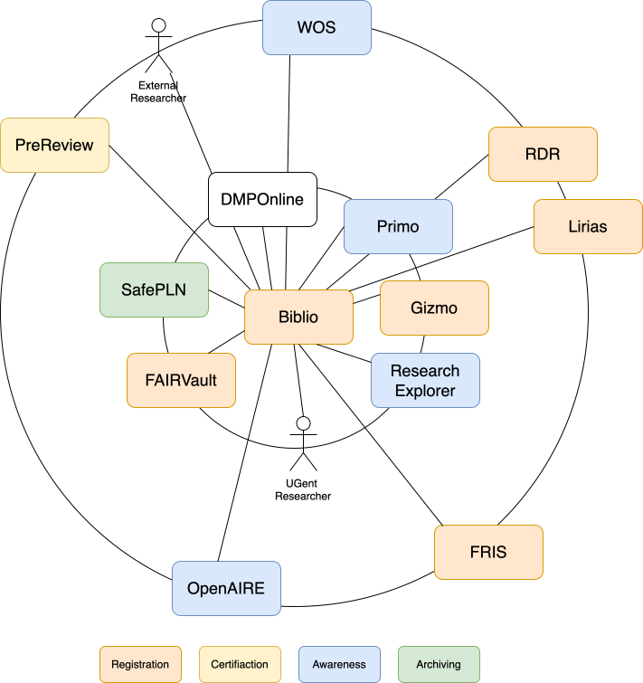

Biblio Next Generation Recommendations
The following recommendations follow Bollini et. al “Next Generation Repositories”1 report, that forms the basis of new innovations in contemporary repository systems.
The goal of the recommendations of the next generation report is to create a more sustainable and innovative global network for sharing information about research outputs and building new research services on top of this data. Such additional services include standardized usage metrics, peer review, social networking, interlinking, archiving and discovery. Achieving greater interoperability between repository systems and service provides increases the changes for providing an alternative scholarly communication system governed by institutional values rather than for-profit motives.
To bring such a shared knowledge commons closer to a reality interoperability features need to be provided in repository systems. The document below provides some of the recommendations from the Next Generation Repositories report and applies it to the Academic Bibliography of Ghent University (Biblio)
This vision aligns with the broader view of libraries and other scholarly institutions playing an active role in scholarly communication by enabling and governing a shared knowledge commons. It also aligns the vision of Ghent University Library to promote the creation of open knowledge within and outside the university community.
The question then becomes: how will the library drive these changes? In this context, the library needs to:
- Ensure digital sovereignty by expanding digital infrastructure to maintain long-term control over UGent’s research output.
- Promote open standards by advocating for and implementing open standards.
- Strengthen non-profit publishing initiatives, including the development and support of its own open journal system.
This document provides recommendations addressing the second point.
Definitions
- Cool URI
- A form of a sustainable, persistent and simple URI2 that follows some basic rules:
- It is independent from the underlying technology used to generate the resource:
- It avoids extensions such as .php, .cgi, …
- It avoid the names of products in the path such as dspace.org.uk , ?id=product:83923
- It is independent form the physical location of the resource (avoid names as frontend, backend, …)
- It does not contain resource metadata (status, access rights, …)
- Scholarly Object
- Scholarly objects on the web are typically published as a set of web resources. A scholarly object typically has:
- A persistent identifier such as DOI, handle or any other identifier that can be expressed as a HTTP URI.
- A landing page that is reachable be dereferencing the persistent identifier and following any HTTP redirects.
- Zero or more content resources that provide the actual content of the scholarly object.
- Zero or more metadata resources that describe the scholarly object in commonly used formats.
- Other identifiers, including:
- authors
- licenses
- types
E.g. The data set PolarIs4CAUS in Biblio is a scholarly object:
- It has a landing page: https://biblio.ugent.be/publication/01K953AFXMV2HHMPP5R8QCTN7B
- It has a persistent id: http://hdl.handle.net/1854/LU-01K953AFXMV2HHMPP5R8QCTN7B
- It does not have local content resources
- It has several metadata resources:
- BibTex: https://biblio.ugent.be/publication/01K953AFXMV2HHMPP5R8QCTN7B.bibtex
- RIS: https://biblio.ugent.be/publication/01K953AFXMV2HHMPP5R8QCTN7B.ris
- …
- DC: https://biblio.ugent.be/publication/01K953AFXMV2HHMPP5R8QCTN7B.dc
- It has an author identifier: https://orcid.org/0000-0002-7776-2156
- It has a type: https://schema.org/Dataset
- It has no license information
Exposing Identifiers
Many repositories assign persistent identifiers to the resources they host, however these identifiers are typically are only provided in a human-readable manner. E.g., Biblio currently exposes such links as:
Please use this url to cite or link to this publication: http://hdl.handle.net/1854/LU-01KJSWB5S7VBF86AWVVCNN1K18
A recommended machine readable interface exposes such links using Signposting cite-as Link headers on the landing page:
<http://hdl.handle.net/1854/LU-01KJSWB5S7VBF86AWVVCNN1K18>; rel="cite-as"✔ Biblio currently implements Signposting cite-as Link headers for the landing page.
Content resources can potentially also have a persistent identifier. When such an identifier is distinct from the scholarly object identifier, the recommendation is to expose such identifiers using a Signposting cite-as Link header.
❌ Biblio currently does not expose persistent identifiers for content resources. However, the download link has the characteristics of a Cool URI:
https://biblio.ugent.be/publication/01KJSWB5S7VBF86AWVVCNN1K18/file/01KJSWKYABMQG7FK3DZGED8JPR.pdfwhereas the URL it redirects to has fewer of these characteristics (‘backoffice’ is a location):
https://backoffice.biblio.ugent.be/download/01KJSWB5S7VBF86AWVVCNN1K18/01KJSWKYABMQG7FK3DZGED8JPRA recommendation is to provide the Cool URI version as cite-as link in the Link header of the content resource.
Do not reuse the persistent identifier that identifies the scholarly object as a whole for content resources, and vice versa. These are distinct objects.
Declaring Licenses at the Resource Level
Provide a uniform interface across different repository systems to identify the constraints on how scholarly objects can be (re)used. Currently, both humans and machines browsing the Web encounter highly heterogeneous ways in which this information is presented. A more uniform presentation can be presented by next-generation repositories. For humans, this can be achieved by embedding easy recognizable logos that convey the license. For machines, this information can be conveyed using the appropriate typed HTTP links.
A recommended machine readable interface exposes such links using Signposting license Link headers for each content resource:
<https://spdx.org/licenses/CC-BY-NC-4.0.html> ; rel="license"where the URI is the identifier of the appropriate license. E.g. a Creative Commons license expressed as HTTP URI’s, preferably using SPDX license URI’s.
❌ License information is currently exposed in the front-end at the scholarly object level in the inappropriately named $.copyright_statement field in JSON exports.
The backend provides such license information at resource level in the license field.
Do not reuse the license for the scholarly object as a whole for content resources, and vice versa. These are distinct objects.
Interacting with Resources
Repositories do not exist as isolated islands; they are increasingly interconnected. Within the local university landscape, these interconnections can include links between an institutional archive and its data repository, the research productivity portal, departmental websites and the library catalog. Within the global web landscape, these interconnections may include connections to institutional and commercial aggregators such as OpenAIRE, CORE, and Google Scholar, as well as web archives and, increasingly, other types of value‑adding services such as journal platforms and peer‑review systems.
Repositories can also increase their value by supporting services such as alerting – either sending alerts external services about new content or receiving alerts about external events related to repository holdings. An outgoing alerting service could, for instance, provide a real-time trigger to external systems for (re)indexing a scholarly object. An incoming alert could, for example, inform a scholarly object about new links generated by external systems that reference it.
The interconnections are not only possible within the university landscape but are also envisioned on a global scale. Repositories could support commentary, annotation, and peer review activities. They can submit scholarly objects to archival services and aggregators not only in batches but also in an ad hoc manner.
Even internally, a notification system can support topic subscriptions, webhooks, and similar mechanisms. More broadly, a uniform protocol for interacting with resources discourages monolithic system design. By applying a separation of concerns, capabilities such as data enrichment or automatic content discovery can be implemented independently of the core repository system — or delegated entirely to external services. For example, the management of temporary access to a scholarly object could be handled externally, while the access logic itself remains close to the content.
Technologies to support these interoperability features are available across a range of messaging, alerting, annotation, and notification mechanisms. (+) A local messaging system offers full control over features, behavior, and performance tuning for a specific workload, (−) but introduces interoperability limitations and long-term sustainability concerns. Such systems are appropriate when no external dependencies are required. Crossing departmental or institutional boundaries, however, demands interoperability, ecosystem support, and long-term maintainability.
A strategic response could be to invest in standardized messaging protocols such as Webhooks, Web Annotations, COAR Notify, and Event Notifications.
Implement a messaging system to support repository workflows such as:
- Topic subscriptions : publish/subscribe channels for repository events
- Webhooks : outbound HTTP callbacks on configurable triggers
- Alerting : threshold- and event-driven notifications across channels
- Event interlinkages : cross-repository and cross-system event routing
❌ Biblio currently does not provide an internal or external messaging, alerting or notification system.
A strategic investment could be the establishment of linkages between the FAILVault, Biblio and the research explorer.
Implementing such a system could enable automatic interlinking between repositories. Registering a scholarly object in one system could trigger automated, bidirectional links with other systems in the local environment.
In a next stage, an outreach between institutional repositories in Flanders could be imagined to interlink scholarly resources.
Alternatively, a data model for Biblio could be conceived as interaction‑based: each metadata update to a record is modeled as an event. Each event represents an update to the record, and the collection of events that modify the record constitutes the provenance trail of changes.
Such a provenance trail, or a selected subset of it, could be exposed as an external web resource in the form of a public Event Log. This Event Log could focus on the most important value‑adding events for a scholarly object, such as those related to registration, certification, awareness, and archiving actions (see next section).
Collecting and Exposing Activities
The previous section focuses on interacting with resources through interlinking. In this section, these allowed interaction types enable read–write Web capabilities for repositories. In this scenario, a network of repositories and service provides should collectively be able actively collect and expose, in real time, activities pertaining to the scholarly objects they host or the scholarly objects they provide value-added services for.
Communication between repositories and service providers could be point-to-point (e.g., one repository directly communicating with another repository about an activity), or via publish-subscribe mechanisms (e.g., a service provides subscribing to specific activities or object types).
Uniform communication protocols between networked systems would significantly benefit users by increasing interoperability across systems and providing the convenience of a more uniform user experience. From a network architecture perspective, such uniform communication protocols help prevent workflows from becoming tied to legacy protocols that are easy to introduce but almost impossible to deprecate. They also enable a network effect: when a community of repositories uses the same protocols to exchange information about activities, this creates fertile ground for sharing tools to collect and process that information.
❌ Biblio currently does not expose activities related to the scholarly objects it hosts in machine‑readable formats. In addition, Biblio currently has limited workflows for the automatic collection of activities related to scholarly objects, and these workflows do not use standardized protocols.
This note will describe some scenarios that are enabled by collecting and exposing activities.
Biblio could act as a notification system that listens to (web) archiving events. For example, a SAFE‑PLN LOCKSS network could archive scholarly objects from Biblio and send an archiving announcement message when such archived objects become available. Such a value-added service can be presented to users as banners.
The FAIRVault could send a notification to the Biblio system containing information about the linkage between a dataset and a scholarly record in Biblio. Such an event can be expressed as bi-directional links between Biblio and the FAIRVault.
Scanning external networks such as the OpenAIRE Global Scholarly Knowledge Graph could also provide triggers for discovering linkages between scholarly objects in Biblio and external scholarly objects. Such information could be presented to Biblio using a standards‑based notification protocol. These linkages would, in turn, establish connections to scholarly objects that provide evidence of reuse, citation, and related activities.
Users of the Biblio system may be willing to activate an inbox for scholarly objects and receive notifications about access requests. External users can request access to an otherwise inaccessible scholarly object. Such an inbox could also be used to notify users about other lifecycle events pertainig to the scholarly object—if such information is available—such as reuse, indexing by external services, archiving, and similar activities.
Systems such as Biblio or Gizmo could open a notification channel that listens for media mentions of a researcher or mentions related to a scholarly object. At the Vrije University Amsterdam the open science team is experimenting with collecting such information for scholarly objects and creating dashboards.
Automated agents could collect information about traditional and non‑traditional scholarly objects and present it to Biblio for registration. Already for a long time the Danish National linrary is using automated imports for most of the registration of traditional scholarly objects. The SURF Claim-it experiment is trying to do the same for non-traditional scholarly objects.
User of the Biblio system could request for a preprint a review in a decoupled prereview service such as: PreReview, PCI Peer Review In (see, e.g. University of Cambridge Repository workflows).
The network below places Biblio at the center of a potential network of activities related to registration, certification, awareness, and archiving services. Each external repository, such as Lirias in Leuven, has its own “center” within a network of value‑adding services. In addition to these services, humans, such as internal and external researchers, can also interact with the system to request services from Biblio.
In an idealized world, all of these systems could be interlinked in both directions. Providing endpoints in these systems to inform each other about activities could be a first step toward realizing this idealized situation.

A quick starting point for Biblio to introduce notifications could be the implementation of the COAR Notify profile for Event Notifications, enabling the collection of information about linkages to scholarly objects hosted by Biblio.
An example repository containing possible message types is available at: https://codeberg.org/phochste/en-data-publication-example
Identification of Users
Facilitating collection of activities or creation of overlay content such as annotation, commentary and peer review in distributed networks is greatly improved by the ability of uniformly identifying users.
Such identifiers can be used to expand professional networks and to discover and identify important people, relevant scientific methods, conferences, journals, meetup venues, and funding opportunities. For example, ORCIDs can be used to query scholarly databases to find more information about the subject.
✔ Biblio currently implements many forms of identification mechanisms such as:
- Internal Biblio identifiers: F5134A54-F0ED-11E1-A9DE-61C894A0A6B4
- UGent identifiers: 802000069754, 975581625833
- OCRID: 0000-0002-8596-222X
However, there might be other identities that can be associated with a researcher such as:
- Social media accounts: Linked-In, X, Bluesky, Mastodon, Blogs, Substack
- External affiliation identifiers: Leuven ID, Oxford ID, Sorbonne ID
Social media accounts are no longer just tools for casual networking; they have become vital hubs for real-time scholarly debate and academic exchange. Integrating these profiles (on a voluntary basis) into an institutional repository (such as Biblio) offers two strategic advantages:
Connecting to informal scholarly communication: it bridges the gap between formal publications and the “informal” scholarly conversations happening online, providing a fuller picture of a researcher’s impact.
Verification and trust: by linking to these platforms, the institution provides a “stamp of authenticity.” This creates a digital handshake—often referred to as a
rel=melink—that proves a social media account truly belongs to the researcher. This protects their professional identity and ensures that followers are engaging with a validated source.
What Biblio does quite well:
- ✔ Modelling persons using multiple unique identifiers
- ✔ Make such identifiers addressable (e.g. https://biblio.ugent.be/person/0000-0001-8390-6171)
- ✔ Presenting such identifiers as clickable links on the Person page
- ✔ Exposing such identifiers in a machine-readable format (such as Signposting, JSON, RDF,…)
What Biblio is missing:
- ❌ Supporting other types of person identifiers in the data model
- ❌ Exposing all types of identifiers as clickable links on the Person page
- ❌ Adding the
rel="me"attribute to such clickable links